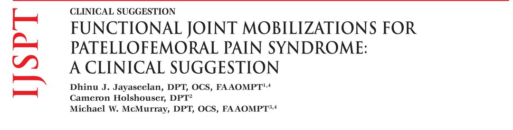
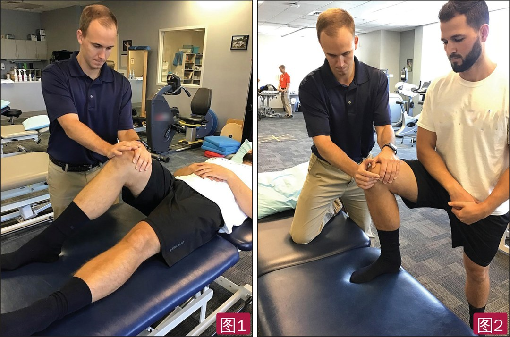
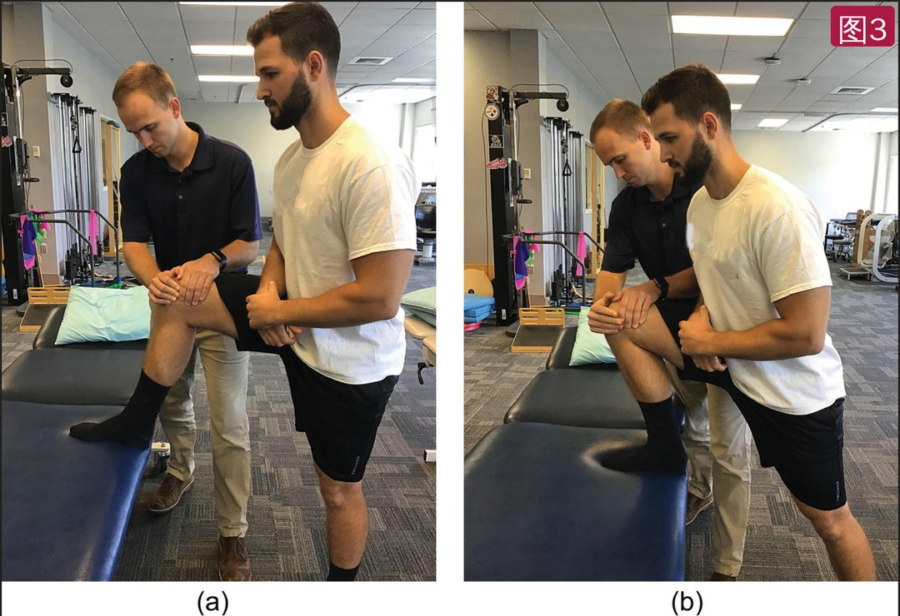
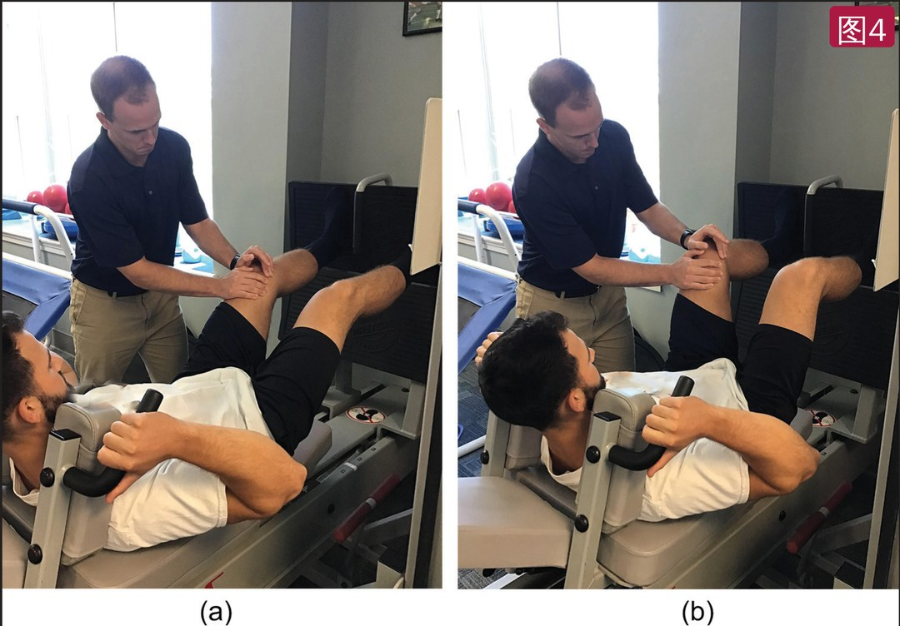
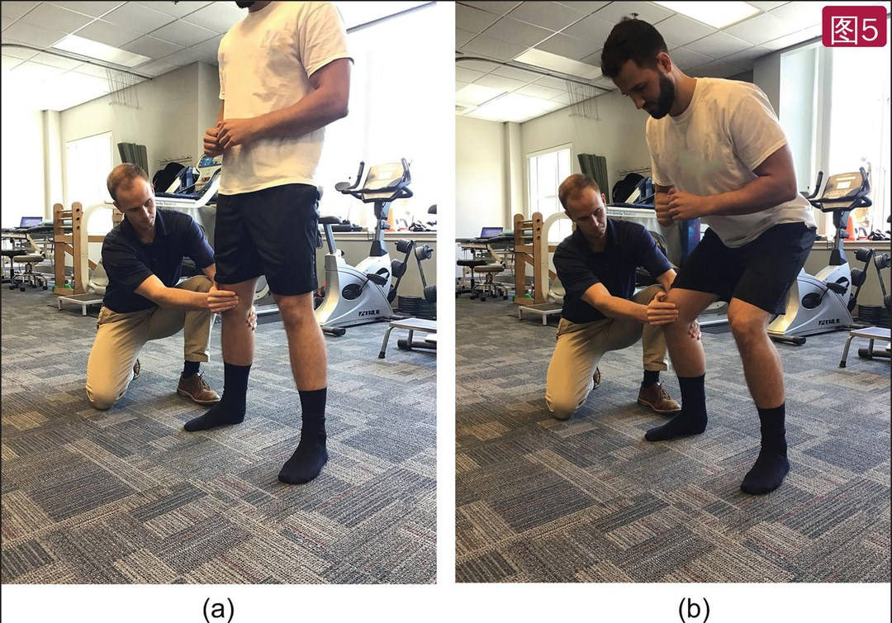

🔖原文首页（IJSPT 2020 年第 15 卷第 4 期）
📚 文献卡片
▪ 英文原题：Functional Joint Mobilizations for Patellofemoral Pain Syndrome: A Clinical Suggestion（髌股疼痛综合征的功能位关节松动：临床建议）
▪ 作者：Dhinu J. Jayaseelan, DPT, OCS, FAAOMPT · Cameron Holshouser, DPT · Michael W. McMurray, DPT, OCS, FAAOMPT
▪ 机构：乔治·华盛顿大学健康、人体功能与康复科学系；Total Motion Physical Therapy；弗吉尼亚大学物理与作业治疗；弗吉尼亚骨科手法物理治疗研究所（美国）
▪ 期刊：International Journal of Sports Physical Therapy（IJSPT）
▪ 年卷期：2020;15(4):643-649
▪ PMCID：PMC7735690
▪ 文章类型：临床建议（Clinical Suggestion）
▪ 证据级别：5 级
▪ 关键词：anterior knee pain · manipulation · manual therapy · mobilization · movement system
髌股疼痛综合征（PFPS）很常见：成人年患病率 23%，青少年 29%；约 50% 的患者症状持续，有的长达数十年，还可能与早发骨关节炎和慢性疼痛有关。
• 完全伸膝时髌骨不与股骨髁接触，可以自由滑动；屈膝 20°～30° 时髌骨下关节面开始接触，60°～90° 时接触面积最大
• 负重大幅增加髌股关节压力：步行约 1.3 倍体重，上下楼 3.3 倍，跑步 5.6 倍，深蹲可达 7.8 倍——难怪多数患者在负重屈膝活动中痛
• 运动和负荷管理是一线治疗，但很多人长期不改善，可能还有运动解决不了的问题：髌骨内滑受限，阔筋膜张肌、髂胫束或外侧支持带紧张，都可能增加屈膝时外侧关节负荷
• PFPS 患者还可能存在中枢疼痛处理异常：心理功能改变、时间总和增强、条件性疼痛调制受损、广泛痛觉过敏、体感改变、心理困扰、双侧触觉敏感性下降
• 关节松动能改善活动度、降低伤害感受兴奋性、增强疼痛调制、减轻广泛痛觉过敏、改善心理结局
但髌股关节松动通常在非负重伸膝位做——最容易感到活动度，却很少诱发症状，这可能是单独松动效果有限的原因之一。作者提出：在诱发症状的功能位（屈膝、负重）做髌骨松动。
| 步骤 | 体位 | 目的 |
|---|---|---|
| 1 | 仰卧屈膝中段，髌骨内滑（图1） | 复制诱发症状的屈膝角度（蹲、上下楼），但不负重、压力小 |
| 2 | 静态弓步部分负重，髌骨内滑（图2） | 症状出现在负重活动范围某一点时 |
| 3 | 弓步中的动态松动（MWM）（图3） | 闭链屈膝时维持内滑 |
| 4 | 腿举中的动态松动（图4） | 可逐步加负荷，从部分负重到全体重或更多 |
| 5 | 深蹲中的动态松动（图5） | 单腿或双腿蹲时持续滑动或分级摆动 |
一句话概括：在患者“哪里痛就在哪里推”——从仰卧屈膝到静态弓步，再到弓步、腿举、深蹲中的动态松动，逐步负重、逐步功能化。
• 部分 PFPS 患者同时存在外周和中枢疼痛机制问题；关节松动可抑制异常疼痛机制，再加上生物力学作用，可作为有力的辅助手段
• 屈膝时髌股吻合度增加、活动度下降，在诱发症状或受限的角度松动，可能改善髌股负荷分散、减轻疼痛
• 研究显示，尽早找到并改善患者的主要诱发动作（可比较征），出院时结局更好
• 疼痛的动作常导致代偿或回避；让动作不那么痛，就可能变得更“功能”

🔖图1（左）：非负重屈膝位的髌骨内滑；图2（右）：静态负重屈膝位的髌骨内滑
• 图1 仰卧屈膝中段：复制蹲、上下楼时的膝角，但去掉负重，压力较小
• 图2 静态弓步：部分负重；适合负重时活动范围中某一点出现症状的患者

🔖图3：单腿弓步中的髌骨内滑动态松动——a 起始位，b 结束位
• 图3 弓步中的动态松动（MWM）：滑动方向取决于哪个方向能减轻症状，和/或治疗师感觉哪个方向受限；示例中在闭链屈膝过程中维持内滑

🔖图4：腿举中的髌骨内滑动态松动——a 起始位，b 结束位
• 图4 腿举：可加负荷，从部分负重进阶到全体重甚至更多；整个动作中维持内滑，理论上减少外侧关节的过度压力

🔖图5：双腿深蹲中的髌骨内滑动态松动——a 起始位，b 结束位
• 图5 自重深蹲：患者做单腿或双腿蹲时，治疗师施加持续滑动或分级摆动
• 按患者的症状和功能受限任务，还可以选其他体位；诊室有效的话，可以设计类似的家庭训练
| 主要问题 | 手法选择 | 持续时间 |
|---|---|---|
| 以疼痛为主（疼痛影响其他训练） | 低级别松动，不进入组织阻力屏障，通过神经生理作用减轻疼痛、使神经系统脱敏 | 时间短，避免激惹症状，松动间给休息 |
| 以僵硬为主 | 高级别松动，从力学上改善活动、降低组织阻力 | 做到感觉组织阻力改变为止，通常比镇痛更久 |
• 作者认为不宜给统一处方，手法应以患者为中心
• 屈膝位髌股吻合度高，可用的活动度减少，可能难以评估现有关节活动
• 动态松动（MWM）：维持一个能减痛的滑动，让患者主动做原来痛的动作；若该方向不减痛，就换方向，直到找到减痛的滑动（如果有）
• 可调整推髌骨的角度，以适应股骨髁的解剖位置
• 关节运动学原则来自尸体和正常关节的研究，病理、疼痛或活动受限时未必适用；例如粘连性关节囊炎中，反方向滑动反而更能改善活动度——手法要结合实时的临床推理
• PFPS 难治，部分原因是整条下肢动力链的多种损害、训练错误、鞋子、跑步地面以及可能的中枢疼痛处理异常
• 与其他干预联合时，关节松动能减轻疼痛、改善功能，效应量中到大；但现有研究多在仰卧位做，可能对功能任务迁移有限
• 作者并不建议所有 PFPS 患者都做关节松动：很多人没有活动受限，而是控制已有活动的能力不足，此时特定训练和负荷管理更有益
• 关节松动主要用于有疼痛或活动受限时，而且不应单独使用
• 证据级别低：5 级临床建议，基于作者经验（“在疑难病例中效果不错”），没有研究验证功能位松动的效果，作者也明确说需要研究
• 亮点：思路清楚——把常规松动从“不痛的位置”搬到“痛的位置”，并给出从不负重到负重的五步进阶，临床容易上手
• 局限：没有给出具体剂量、级别或进阶标准；屈膝位髌骨活动度小，手法评估难度增加；负重位操作对治疗师体位和力量要求较高
• 适用人群：主要针对存在疼痛或活动受限、单纯运动效果不好的顽固性 PFPS，不能替代运动和负荷管理
• 小瑕疵：“arthokinematic” 拼写错误；图注中均为内滑示例，其他方向未展示
① 思路：髌股痛多在负重屈膝时出现，松动也应在这些位置做
② 五步进阶：仰卧屈膝 → 静态弓步 → 弓步 MWM → 腿举 MWM → 深蹲 MWM
③ 方向：选能减痛或感觉受限的方向，示例为内滑；不减痛就换方向
④ 剂量：以痛为主用低级别、短时间；以僵硬为主用高级别，做到阻力改变
⑤ 适应证：有疼痛或活动受限时才用，并与运动和负荷管理结合
⑥ 证据：目前只是经验性建议，有效性有待研究
欢迎关注骨科康复小黄公众号，获取更多物理治疗的专业知识！
📄参考文献：
Jayaseelan DJ, Holshouser C, McMurray MW. Functional Joint Mobilizations for Patellofemoral Pain Syndrome: A Clinical Suggestion. Int J Sports Phys Ther. 2020;15(4):643-649. PMCID: PMC7735690.
文中图片均来自原文（图中仅有 a、b 字母，器械上的英文商标已模糊）；原文无表格，文中表格为整理，仅用于学术交流。